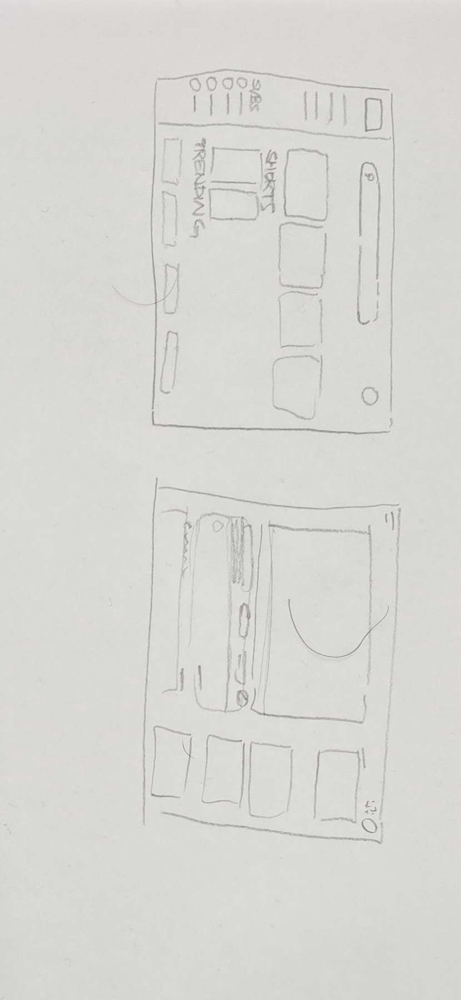

WWW
For the first week, we began with learning about Human Computer Interaction (HCI), which is the ways in how us humans interact with technology. We want to think of how common gestures are used and their perceived action tied to the gesture. For that, our first activity is to create our own gestures.
Gesture 1

Gesture 1 is gesture 1 where you gesture the gesture
Gesture 2
Gesture 2 is gesture 2 where you gesture the gesture
Gesture 3
Gesture 3 is gesture 3 where you gesture the gesture
HTML Tags activity
We did html tags for youtube yuhhhhh
